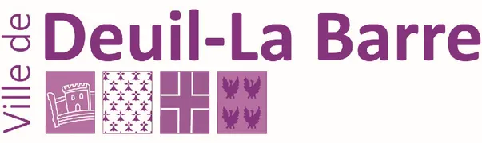
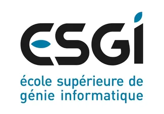

Futur étudiant en Bachelor 3 Cybersécurité à l'ESGI : spécialisé en administration système, sécurité défensive et développement bas niveau.
Prêt à m'investir au sein de votre infrastructure.
Mon parcours technique s'est d'abord construit autour de l'administration système et réseau ainsi que le développement par le biais de mon Bachelor 1 & 2 à l'IPSSI.
Prochainement, en intégrant le Bachelor 3 Cybersécurité à l'ESGI, mon objectif est d'élargir mon expertise vers le développement bas niveau (Rust, C, Assembleur) afin d'aborder la sécurité avec une vision globale, de l'infrastructure jusqu'au code.
En parallèle de ma formation, je pratique le Homelabbing. Cela me permet de concevoir, déployer et sécuriser des services pour consolider mes acquis théoriques en environnement réel ainsi qu'à terme d'appliquer une souveraineté numérique.
Je recherche une entreprise où je pourrai développer mes compétences opérationnelles au contact d'experts, tout en contribuant activement au maintien en conditions de sécurité de vos environnements.

Mairie de Deuil-la-Barre
ESGI - Paris
Lycée Charles PéguyJe suis actuellement à la recherche d'une opportunité d'alternance pour la rentrée 2027. N'hésitez pas à m'envoyer un message via ce formulaire, je vous répondrai dans les plus brefs délais pour convenir d'un échange.